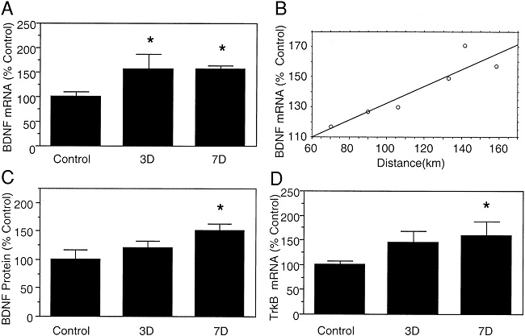
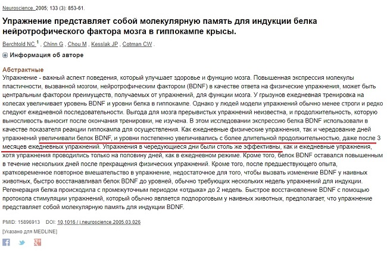
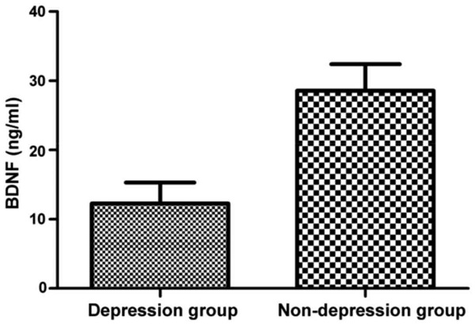
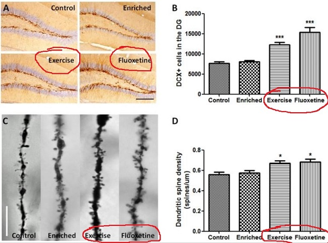
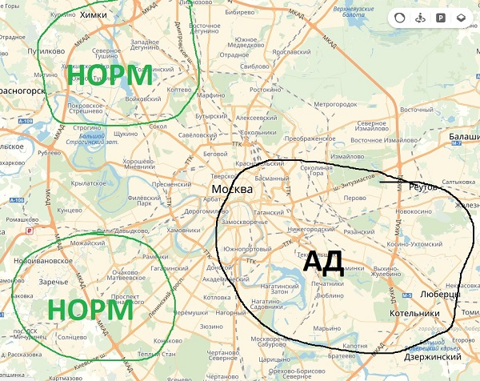
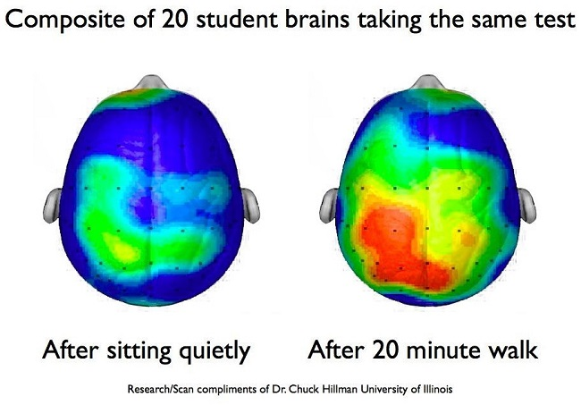

БЕГ: Ноотроп, Антидепрессант, Жиросжигатель

Всем привет! Знаете ли вы, что такое физическое упражнение как бег, является ноотропом, в переносном смысле? Улучшает интеллект и снижает депрессивные проявления? Сегодня о том, как можно совместить интеллектуальную деятельность, медитацию и физическую активность в одном простом и таком легком, доступном каждому, упражнении как бег.
Это упражнение не требует от вас иметь хорошую изначальную подготовку, не требует абонемента в фитнес клубе, либо каких-то специальных условий или финансовых затрат. Все что вам необходимо – удобная обувь и территория.
Спортивные нагрузки всегда были свойственны для человека: поднять, принести, схватить, удержать, догнать или убежать. По факту, спорт и здоровье сильно связаны, но эта связь не прямо пропорциональна. Чем больше в жизни спортивных нагрузок, то тем хуже здоровью, после некоторого предела. Поэтому, любая нагрузка на организм должна быть умеренной.
Бегать можно по-разному: спринты, средние дистанции и длинные. Можно бегать по пересечённой местности, можно по грунту, по асфальту, на беговой дорожке, наконец. Под бегом, в данном выпуске, понимаются средние дистанции в низком или среднем темпе, желательно в зеленой местности.
В чем заключаются ноотропные эффекты бега:
- Серьезный рост нейротрофических факторов. Уже во многих выпусках периодически упоминались такие факторы как NGF и BDFN.( 1 , 2). Все началось с мышей, ученые заметили, что мыши, у которых было колесо в клетке, в котором они бегали, со временем становились умнее в тестах, и прогресс был лучше, чем у мышей с хорошим питанием или без колеса.
Так и дошли до одной из первопричин – нейротрофинов. Это есть факторы роста, развития и защиты нервных клеток. Это то, что улучшает память, обучаемость, борется со стрессом и даже продлевает активную жизнь. Бег способен в несколько раз увеличить создани. Речь действительно идет об изменениях в десятках и сотнях процентов. (3 ,
4).

Что еще примечательно, что рост нейротрофинов был больше в мРНК, чем в конкретных белках. Это говорит о подготовке организма к росту нервов. Еще раз: мРНК – это информация, которая служит источником для создания белков, таких как нейротрофины. И когда мРНК BDNF, например, увеличивается, то сам белок BDNF увеличится чуть позже. мРНК как пистолет с бесконечной обоймой накапливает патроны BDNF, и в какой-то момент начинает отстреливать этот белок, модифицируя или создавая нейроны.
{kind=link}
- Память и обучаемость. В нервных клетках, а точнее в определенных их цепочках заложены основы нашей памяти. Для справки, наисильнейший рост нервов происходит до 5 лет, поэтому, если у кого есть дети – направляйте их, отвечайте на вопросы «а почему» вкладывая в ответы некоторую философию, как в известном высказывании: «Не давайте человеку рыбу, дайте ему удочку». Рост нервной ткани помогает развиться человеку, освоить навыки и что-то запомнить.
- Антидепрессивное действие (5 , 6). В этом исследовании идет речь, в том числе и о связи белка BDNF и депрессии. Доказано, что при депрессиях снижается уровень данного белка, причем сильно (7). Логика груба, но подсказывает: Увеличите создание BDNF – улучшите самочувствие. Бег увеличивает создание данного белка. Плохое настроение – пойди побегай! Согласно некоторым из исследований, профит по нейротрофинам сохраняется до нескольких дней после пробежки. Причем эффект накопительный, типо если вы бегаете даже раз в 3 дня, факторов роста будет в сумме больше через месяц, а не через неделю. Соответственно и антидепрессивый эффект раскроется не сразу.
{kind=link}
{kind=link}
Другой момент – рост бета-эндорфинов, эти как естественный героин, улучшает настроение + обезболивание. Физические упражнения растят их (как и медитация, 8). Исследователи даже рекомендуют воспринимать их как лекарственный препарат (9)
- Активное долголетие. Наши нервы и мышцы образуют так называемую нервно-мышечную связь. Нейротрофины создают и защищают нервы от разрушений. Улучшите создание нейротрофинов – нервно-мышечная связь будет лучше. Желаете лучше сохранить нервы к старости, если доживете, конечно, – бегайте!
Общие правила к бегу
- Индивидуальная нагрузка. Чтобы бег был полезен, не равняйтесь ни на кого, ищите свой темп. Ваша задача бежать не дистанцию, а время, желательно 30-60 минут. Следите за пульсом, напомним, что ЧСС должна быть около 125, доверительный интервал 10% в большую или меньшую сторону от этого значения. Кто-то за это время пробежит только 5-6 км, кто-то осилит 9-10.
- Не стоит бегать рядом с заводами или вблизи оживленных улиц. Идеально – грунтовая дорога или резиновое покрытие + зеленая местность. Основная опасность бега – нагрузка на коленные суставы, поэтому и рекомендация выбрать дорожку «мягче» асфальта. Отчасти это можно компенсировать мягкой хорошей обувью, но это уже финансовые затраты. Зеленая местность же привнесет в ваши легкие больше кислорода. Если вы живете в крупных городах, советую изучить «розу ветров», иногда будет такая ситуация, когда бег в, казалось бы, «плохом районе» окажется полезней, чем рядом с парком, если на него летит грязь со всего города.
- Достигните такого состояния, когда вы начнете проваливаться в мысли и не замечать, как пробежали последние 100-200 метров. Своего рода «бег на автопилоте», это начнет происходить при хорошем знании маршрута. Это очень мощная штука, после таких «провалов» люди ощущают себя необычайно собранными и вдохновленными на различные идеи.
{kind=link}
{kind=link}
Время пробежки абсолютно не важно, это вопрос личных предпочтений. Существует мнение, что с утра полезнее, но это сложно доказуемое убеждение, поэтому как больше нравится) Вообще, эта практика рассчитана на долгий период. Советую начать с 2-х пробежек в неделю, через пару недель увеличьте до 3-4-х, продержитесь хотя бы 1-2 месяца. Это вам не таблетки глотать, поэтому кто осилит такой ноотропный беговой курс – Отпишитесь о впечатлениях.
{kind=link}
Итог:
— Основной профит бега с точки зрения интеллекта – это увеличение нейротрофических факторов и бета-эндорфинов.
— Вы становитесь умнее и позитивнее через месяцок пробежек.
— Задача при пробежке – отключить сознание, достаточно бегать пару раз в неделю.
Бег универсален, если же по каким-то причинам он вам не подходит, то можно искать альтернативную нагрузку в той же продолжительности и частоте сердечных сокращений.
Надеюсь выпуск вам понравился! Удачи и до скорого!